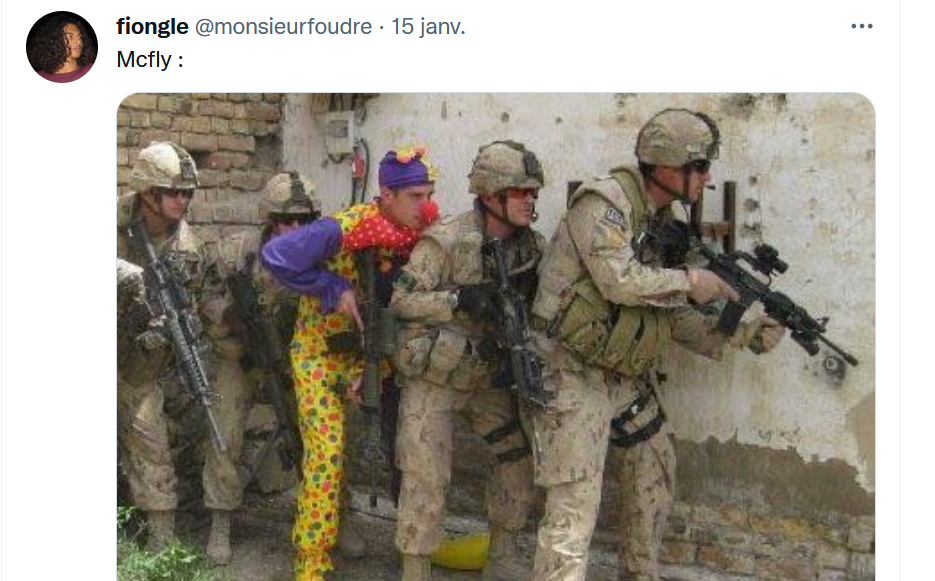

Twitter de Mr.Foudre
Tiktok de Mr.bidule
Youtube de Mr.jspquoi
Instagram de Mr.Foutre ( ordinateurhumide14 son pseudo mmdr , imagine on te fait naitre et ton pseudo insta c'est ordinateurhumide14 oh la honte mdr)
Mr.Foudre ou Mr.Foutre(@moignongle) est un influenceur sur Tiktok , Youtube Short , Instagram... qui contient au total avec ses comptes plus de 120k abonnées ,qui n'est tout de même pas énormes malgré le contenu qu'il nous fournis.(regarder sa tête en bas mdr)
Mr.Foudre est un influenceur très drôle avec un humour très particulier , et c'est pour cela qu'il à autant d'abonnés ! Il à quand même rencontré et fait des vidéo avec certains de vos célébrités favoris , comme : Freddy Gladieux , Jonathant Cohen et pleins d'autre ! par contre le mec qui me pose la question parle moi correctement jsuis pas ton chien ta compris ?(^^)
La photo en haut c'est Freddy Gladieux , c'est Freddy Gladieux dans la photo , Freddy Gladieux , avec Mr machin . Et la photo à coté c'est l'un de ses tweets. Regarder comment il est si drôle ! ;)
Ah bha pas de soucis mon reuf :
Twitter de Mr.Foudre
Tiktok de Mr.bidule
Youtube de Mr.jspquoi 
Instagram de Mr.Foutre ( ordinateurhumide14 son pseudo mmdr , imagine on te fait naitre et ton pseudo insta c'est ordinateurhumide14 oh la honte mdr)